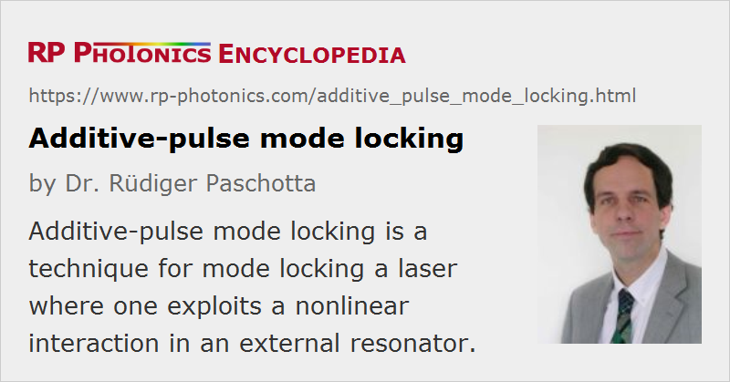

Additive-pulse Mode Locking
Acronym: APM
Definition: a technique for mode locking a laser, using a nonlinear interaction in an external resonator
Alternative term: coupled-cavity mode locking
More general term: mode locking
How to cite the article; suggest additional literature
Author: Dr. Rüdiger Paschotta
Additive-pulse mode locking [1, 2] (sometimes also called coupled-cavity mode locking) is a technique for passive mode locking of lasers (typically bulk lasers), used for generating short optical pulses with durations of picoseconds or femtoseconds.
The general principle of additive-pulse mode locking is to obtain an artificial saturable absorber by exploiting nonlinear phase shifts in a single-mode fiber. The fiber is contained in a resonator, which has the same round-trip time as the laser resonator and is coupled to it with a semi-transparent dielectric mirror. The pulses returning from the fiber resonator into the main laser resonator interfere with those pulses which already are in the main resonator. For proper adjustment of the resonator lengths, there is constructive interference near the peak of the pulses, but not in the wings, because the latter have acquired different nonlinear phase shifts in the fiber. As a result, the peak of the circulating pulse is enhanced, whereas the wings are attenuated.
The strength of the APM technique is that it makes it possible to obtain fairly short pulses without using very special optical components. It can also work in different wavelength regions. For these reasons, additive-pulse mode locking was widely used in the early days of passively mode-locked lasers; it was applied to various bulk lasers, color center lasers, and fiber lasers. However, the resonator length adjustment is usually rather critical, questioning the practicability of the technique for commercial products. In some mode-locked high-power lasers, additive-pulse mode locking was reported to be self-adjusting, but the exact mechanism does not seem to have been reported. In some fiber lasers, APM has been reported to occur with self-matched resonator lengths due to an automatic adjustment of the oscillation wavelength [8].
A Modified Scheme for Fiber Lasers
In fiber lasers, mode locking can also be achieved by employing nonlinear polarization rotation in a fiber. That method is actually related to additive-pulse mode locking, although an external resonator is not required. Two polarization modes, which are coupled with each other by nonlinear effects, are interferometrically combined at a polarizing element, where a similar interference effect occurs as in additive-pulse mode locking.
Questions and Comments from Users
Here you can submit questions and comments. As far as they get accepted by the author, they will appear above this paragraph together with the author’s answer. The author will decide on acceptance based on certain criteria. Essentially, the issue must be of sufficiently broad interest.
Please do not enter personal data here; we would otherwise delete it soon. (See also our privacy declaration.) If you wish to receive personal feedback or consultancy from the author, please contact him e.g. via e-mail.
By submitting the information, you give your consent to the potential publication of your inputs on our website according to our rules. (If you later retract your consent, we will delete those inputs.) As your inputs are first reviewed by the author, they may be published with some delay.
Bibliography
| [1] | J. Mark et al., “Femtosecond pulse generation in a laser with a nonlinear external resonator”, Opt. Lett. 14 (1), 48 (1989), doi:10.1364/OL.14.000048 |
| [2] | E. P. Ippen et al., “Additive pulse mode locking”, J. Opt. Soc. Am. B 6 (9), 1736 (1989), doi:10.1364/JOSAB.6.001736 |
| [3] | L. Y. Liu et al., “Self-starting additive-pulse mode locking of a Nd:YAG laser”, Opt. Lett. 15 (10), 553 (1990), doi:10.1364/OL.15.000553 |
| [4] | F. Krausz et al., “Self-starting additive-pulse mode locking of a Nd:glass laser”, Opt. Lett. 15 (19), 1082 (1990), doi:10.1364/OL.15.001082 |
| [5] | K. Tamura et al., “Self-starting additive pulse modelocked erbium fibre ring laser”, Electron. Lett. 28, 2226 (1992), doi:10.1049/el:19921430 |
| [6] | H. A. Haus et al., “Additive-pulse modelocking in fiber lasers”, IEEE J. Quantum Electron. 30 (1), 200 (1994), doi:10.1109/3.272081 |
| [7] | L. E. Nelson et al., “Ultrashort-pulse fiber ring lasers”, Appl. Phys. B 65, 277 (1997), doi:10.1007/s003400050273 |
| [8] | D. W. Huang et al., “Fiber-grating-based self-matched additive-pulse mode-locked fiber lasers”, IEEE J. Quantum Electron. 35 (2), 138 (1999), doi:10.1109/3.740734 |
See also: mode locking, passive mode locking, ultrashort pulses, fiber lasers
and other articles in the category light pulses
|  |
If you like this page, please share the link with your friends and colleagues, e.g. via social media:
These sharing buttons are implemented in a privacy-friendly way!